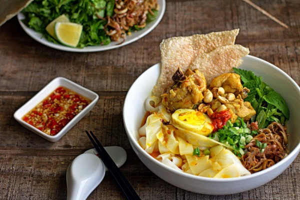
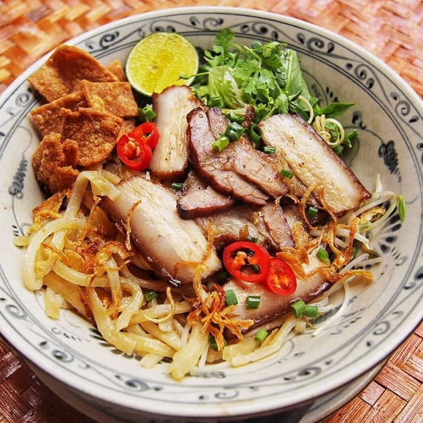
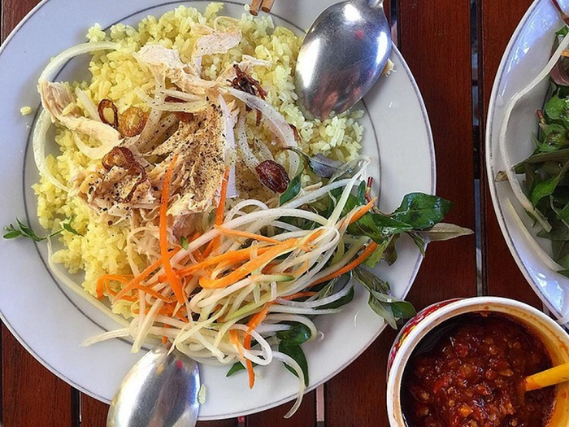
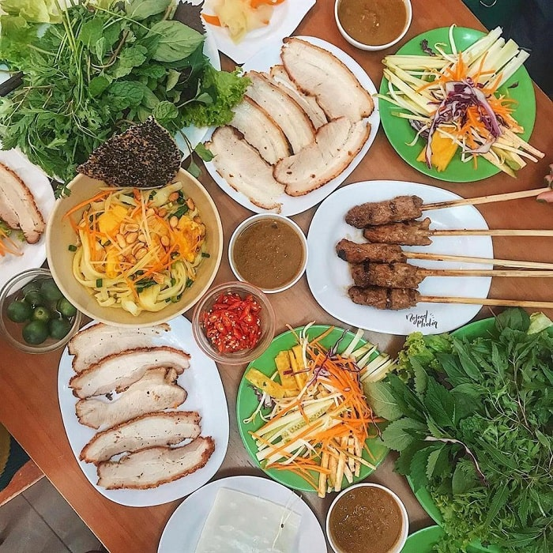
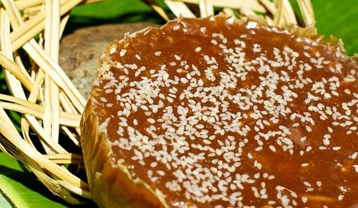
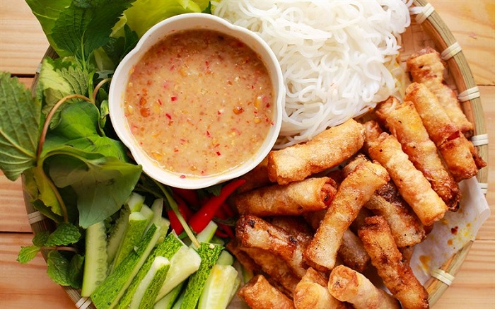

Đến Quảng Nam bạn dễ dàng dàng phát hiện những quán Mỳ Quảng dọc quốc lộ 1A. Cũng như phở, bún… thì mỳ quảng cũng được làm từ bột gạo. Mỳ Quảng được làm từ sợi mì bằng bột gạo xay mịn và tráng thành từng lớp bánh mỏng, sau đó thái theo chiều ngang để sở hữu những sợi mỳ mỏng khoảng tầm 2mm. Sợi mỳ làm bằng bột mỳ được trộn thêm một số phụ gia cho đạt độ giòn, dai.
Cao lầu có vài nét tương đồng với mì Quảng nhưng được chế biến công phu hơn nhiều. Sợi mì vàng, giòn được chế biến công phu, phải dùng loại tro nấu từ Cù Lao Tràm để ngâm gạo, nước xay gạo phải là nước giếng Bá Lễ, nổi tiếng mát lạnh và không phèn. Mang kết hợp cùng với nạc đùi heo xá xíu, da heo hay sợi cao lầu chiên giòn, bánh tráng, đậu phộng rang và một ít rau thơm trà quế. Nước dùng có vị mặn ngọt đậm đà và bùi béo là yếu tố quyết định lớn đến chất lượng thành phẩm. Cao lầu ngon nhất phải ăn ở Hội An, để từ đó cảm nhận cái nét hồn xưa cổ kính nơi phố Hội. Cao lầu được công nhận là 1 trong 10 món ăn đạt giá trị ẩm thực châu Á.
Bất cứ ai ghé thăm thành phố Tam Kỳ, tỉnh Quảng Nam đều phải thử món cơm ngon trứ danh này. Món ăn chỉ từ cơm và thịt gà nhưng lại thơm ngon đặc biệt, đậm đà, hơi cay rất hấp dẫn với các món gà luộc, gà xé phay, gà sốt chua ngọt… Cơm cũng được nấu với nước dùng gà và một ít nước nghệ giã nên khi chín có màu vàng bắt mắt, thơm ngậy, thịt gà ta thả nuôi tự nhiên thịt mềm , da mỏng, ngọt và béo ngậy. Trên đĩa cơm gà xé bao giờ cũng có hành tây, đu đủ chua, rau thơm Trà Quế, nước tương và tương ớt. Ngoài ra, còn có một chén súp trộn tim, gan, cật gà ăn kèm. Với bấy nhiêu thức ngon thì không lạ khi món cơm gà xứ Quảng có thể lấy lòng không chỉ thực khách trong nước mà cả nước ngoài.
Bánh tráng cuốn thịt heo là món ăn khá phổ biến ở khắp nơi nhưng ở Quảng Nam thì là chính gốc. Bánh tráng cũng có 2 loại là bánh tráng khô và bánh tráng nước của làng Đại Lộc. Bánh tráng khô hay còn gọi là bánh tráng lề có độ dai vừa phải dùng để cuộn, không mỏng như bánh đa nem của người Bắc cũng không quá dày như một số địa phương khác. Bánh tráng ướt là bánh tráng xong sử dụng luôn trong ngày, không phơi khô. Đồ cuộn bên trong bao gồm thịt ba chỉ heo, rau làng Trà Quế ở Hội An bao gồm cải xanh, xà lách, húng quế, diếp cá, hành lá, rau thơm, rau đắng, giá, dưa leo, chuối chát, rau muống chẻ, bắp chuối… Cuối cùng là bát nước chậm đậm chất Quảng thêm ớt xanh. Món ăn tuy đơn giản, dân dã nhưng đặc sản Quảng Nam này lại vang danh khắp nước.
Bánh tổ thường xuất hiện vào ngày Tết ở Quảng Nam. Bánh được làm từ 2 nguyên liệu chính là gạo nếp và đường. Bánh có hình chiếc bát được bọc quanh một lớp lá chuối, bên trong màu trắng, ngà, cà phê sữa hay đen tùy vào lượng và loại đường dùng để chế biến. Bên trên bánh được rắc một lớp vừng (mè), khi cầm bánh lên sẽ cảm nhận ngay được mùi thơm của vừng quyện với bánh. Người ta để vậy ăn hoặc nướng, chiên giòn cũng đều ngon miệng. Bánh tổ có thể để lâu, ăn dần dà cả tháng nên hoàn toàn có thể mua về làm quà cho bạn bè, người thân với ý nghĩa tri ân tổ tiên, cội nguồn.
Ram tôm gần giống món nem của người miền Bắc, tuy nhiên lại mang những hương vị, cách chế biến riêng. Nguyên liệu chế biến món ăn là thịt ba chỉ, tôm đồng, bánh đa nem, trứng gà, và các gia vị. Ram tôm đem chiên lên còn nóng, có độ ngậy và thơm, béo của thịt, cùng với vị giòn của con tôm còn nguyên vỏ, hành lá kết hợp với nước chấm chua ngọt, thêm một chút ớt cay, hương vị sẽ không thể nào quên. Ram tôm thưởng thức kèm rau sống thái nhỏ, bún hoặc cơm đều thích hợp, chấm cùng nước mắm tỏi ớt chua ngọt sẽ là món ăn đầy hấp dẫn.
